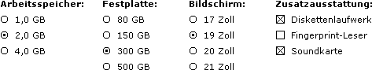
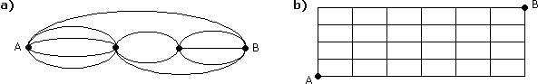

Kombinatorik - Aufgaben 1
1.
In einer Schachtel befinden sich ausreichend weiße und rote Legosteine. Wie viel verschiedene 6er-Türme kann man damit bauen?
2.
Ein Zug verkehrt mit 5 Zweite-Klasse-Wagen, 2 Erste-Klasse-Wagen und 1 Speisewagen. Wie viel Wagenreihenfolgen sind möglich, wenn man Wagen derselben Klasse nicht unterscheidet?
3.
Bei einem Sonderangebot kann man sich 12 Flaschen aus 3 verschiedenen Getränkesorten aussuchen. Wie viel Möglichkeiten gibt es dafür?
4.
Wie viel verschiedene Computer kann man über das folgende Bestellformular zusammenstellen:

5.
Auf wie viel Arten können 5 Personen, von denen 2 einen Führerschein haben, in einem 5-sitzigen Auto Platz nehmen?
6.
Wie viel Sitzplatzbelegungen sind möglich, wenn a) 14, b) 36 Fahrgäste mit einem Linienbus fahren, der 32 Sitzplätze hat?
7.
Wie viel verschiedene Würfelstellungen gibt es, wenn 5 Würfel geworfen werden?
8.
Wie viel verschiedene Wege führen von A nach B, wenn man Rückwärtsbewegungen vermeidet?

9.
Wie viel Möglichkeiten gibt es, um 8 verschiedenfarbige Kabel an ebensoviel Klemmen anzuschließen?
10.
Wie viel Möglichkeiten gibt es, um 9 verschiedene Münzen gleichmäßig auf 3 Personen zu verteilen? (D.h. jede Person bekommt 3 Münzen)
11.
Wie viel Möglichkeiten gibt es, um 9 gleiche Münzen beliebig auf 3 Personen zu verteilen? (D.h. eine Person könnte auch alle Münzen bekommen)
Ergebnisse:
1. 64
2. 168
3. 91
4. 384
5. 48
6. a) 4,11·1019 b) 1,55·1040
7. 252
8. a) 29 b) 210
9. 40320
10. 1680
11. 55